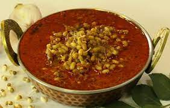

Matki Amti Recipe
INGREDIENTS
- 2 cups Moth Dal (Matki) , spouted
- 1 Onion , roughly chopped
- 2 Tomatoes , roughly chopped
- 4 cloves Garlic
- 1 inch Ginger
- 1 teaspoon Red Chilli powder
- 1/4 teaspoon Turmeric powder (Haldi)
- 1.5 tablespoons Maharashtrian Goda Masala
- 1 teaspoon Mustard seeds (Rai/ Kadugu)
- 1/2 teaspoon Cumin seeds (Jeera)
- 1 sprig Curry leaves
- 3 sprig Coriander (Dhania) Leaves , finely chopped for garnish
- 1 tablespoon Oil
- Salt , to taste
INSTRUCTIONS
- To begin making Matki Chi Rassa Bhaji Recipe (Maharashtrian Style Moth Beans Cooked with Goda Masala),
wash and soak the moth beans overnight.
- Next morning, drain the water and keep it aside in a box to let it sprout.
The sprouting process takes a day or two. Once the sprouts are ready, rinse it in cool water and keep aside.
- Now, make a fine paste of the onion, tomatoes, ginger and garlic using a mixer grinder and keep aside.
- Heat oil in a pan, add the mustard and cumin seeds and let it crackle.
- Immediately add the curry leaves and let it splutter.
- Once they splutter, add the onion paste that we prepared earlier and cook
until the raw smell goes away.
- Now add the red chilli powder, turmeric, goda masala and saute till the curry
leaves the sides and looks well cooked.
- Now, add the sprouted moth beans, 2 cups of water, season with salt and let it
-
